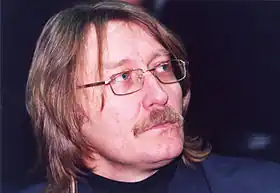
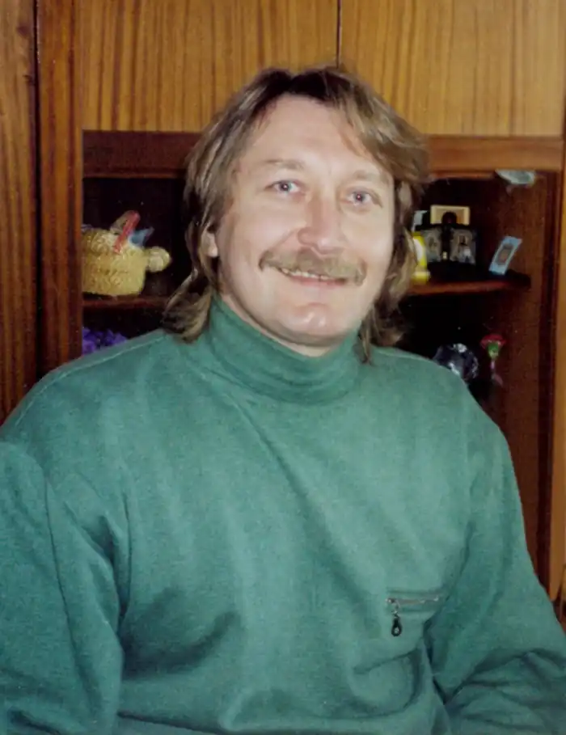
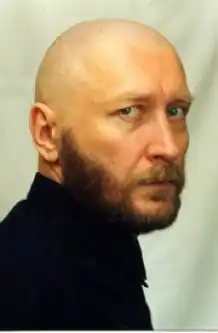

Слапчук Василь Дмитрович, поет, прозаїк, критик, лауреат Національної премії України ім. Тараса Шевченка (2004) народився 23 грудня 1961 р. в селі Новий Зборишів Горохівського району Волинської області.
Закінчив Лобачівську середнью школу, навчався професії шліфувальника у Луцькому технічному училищі № 1, після якого працював на автозаводі Комунар м. Запоріжжя. Служив у 3 батальйоні 66 ОМСБ, що знаходилася у м. Джелалабаді (Афганістан), отримав контузію, коли БМП підірвалася на міні, від госпіталізації відмовився, зоставшись на бойовій позиції. Під час штурму бази моджахедів в ущелині Тора-Бора (одна із п'яти наймасштабніших військових операцій, що проводилися радянськими військами на території Афганістану 1981 р.) у провинцїї Нангархар був тяжко поранений, лікувався у шпиталях м.Ташкента та м. Львова. Закінчив факультет української філології Луцького педагогічного інституту ім. Лесі Українки (1988–1993). Кандидат філологічних наук (2011) р. (дисертація: "Національний образ світу у творчості поетів-шістдесятників (М. Вінграновський і А. Вознесенський)"). Літературну діяльність С. розпочав на початку 90-х років. Його ранні вірші публікувалися в обласній молодіжній газеті "Молодий ленінець" (тепер "Віче") (1984 р.), журналі "Перець" та у журналі "Жовтень" (тепер "Дзвін") (1989 р.). Перша поетична збірка "Як довго ця війна тривала" виходить у 1991 році й разом із повістю "Прокляття" (1991) та книжкою віршів "Німа зозуля" (1994) утворює об'єднане афганською тематикою трикнижжя. Осмислюючи трагедії та руйнації, що їх неминуче приносить війна, С. озвучує своє розуміння принципів людського існування/співіснування, в якому до найвищих моральних та духовних цінностей відносить цінності, запропоновані християнським світосприйняттям. У вірші "В оточенні" С. протиставляє фатальному безуму війни, в якій "знову йде на муки син", просвітлену та обнадійливу теїстичну символіку: "Війна диктує нам закони, // Ми їх зречемося колись. // У небі місяць, мов ікона, // На нього тихо помолись". Л. Оляндер пише: "Афганістан багато що змінив у світогляді Василя Слапчука. Пережите та передумане стало значною часткою того ґрунту, на якому почали вибудовуватися його поезія й гуманістична художньо-філософська концепція світу та людини". У 2002 р. обидві поетичні збірки та повість "Прокляття" перевидаються книгою "Птах з обпаленим крилом", назву якої узято з вірша "Скотилось сонце кулею згори…" (зі збірки "Як довго ця війна тривала"): "…Тіла горіли у вогні, // А душі вже знялись у вирій, // На рідну землю подалися. // Як птах з обпаленим крилом, // Душа кружляла над селом". У післямові до книги письменник зазначає: "Якими б не видавалися тепер мені або ж читачеві ці тексти, писав я їх тоді щиро. Я діставав їх із себе, вони замішані на моїй крові. Тож, незважаючи на деякі ґанджі засобів художнього вираження й технічного втілення, я й сьогодні готовий підписатися під суттю кожного з цих віршів". До афганської теми С. повертається у книжці "Навпроти течії трави" (2001), до якої увійшли написані у 1994–1999 рр. поетичні та прозові тексти, а також у новому романі, розділи з якого у 2009 р. було заанонсовано у журналі "Кур'єр Кривбасу". У наступних збірках поета душевний біль, пов'язаний із військовою тематикою, притлумлюється. У римованих поезіях, верлібрах та віршах у прозі з'являються прояснені й щемливі ліричні інтонації, оскільки притаманну афганським збіркам експресивність і почуттєву інтенсивність С., філософськи переосмисливши своє військове минуле й зі стоїцизмом прийнявши його фатальні наслідки, трансформує на іншому духовному рівні ("Стосовно досвіду афганської війни. Цей досвід виявився позитивним попри негативне явище"). У цьому сенсі є показовою книжка "Мовчання адресоване мені" (1996) — чергове поетичне трикнижжя із графічним художнім оформленням у авторському виконанні. Триєдність у С. завжди апелює до християнської символіки. Власну світоглядну і творчу еволюцію С. звізуалізував на аскетичній чорно-білій книжковій обкладинці: зболений вусатий чоловік зі смиренно опущеними бровами вкладає голову до рота космічної рибини. Позаяк риба з часів раннього християнства є першим символом і монограмою Ісуса Христа, а три переплетених риби у свою чергу символізують Святу Трійцю, авторську ілюстрацію слід сприймати у промовистому релігійному контексті. Символика, котра насичувала афганські поезії раннього періоду творчості (гімнастерка, душман, куля, БМП, варта, зброя), починаючи з книжки "Мовчання адресоване мені", поступається символам філософського споглядання та самозаглиблення (ангел, мовчання, тиша, синиця, бедрик, метелик). Серед наступних поетичних книжок С. — "Укол годинниковою стрілкою" (1998), а також об'єднані просвітленим образом хлопчика-мудреця збірки "Трикнижжя Явіна" (1996) і "Крапка зсередини" (2000), в яких дедалі виразніше відбувається художньо-образний симбіоз християнського світогляду та східної філософії (конфуціанство, дзен, суфізм). Філософія Сходу віддавна належала до головних естетичних уподобань письменника. Розміщені у збірках тексти вирізнюються ємкою лаконічністю висловлюваних автором спостережень і думок, а чергування римованих віршів, верлібрів, прози стає ще більш продуманим та принциповим. Літературознавці (В. Базилевський, М. Жулинський, М. Кодак, Є. Баран, І. Бондар-Терещенко), звертаючись до творчості С., вказують на притаманні його творам витончений психологізм, афористичність, алюзійність, делікатну іронію, сарказм, парадоксальність, неоднозначність та багатоплановість філософських запитань. Із цього приводу Є. Баран зазначає: "Слапчук все більше і більше говорить парадоксами. Це його світоглядний принцип і мистецький прийом. Все у всьому: взаємопов'язування взаємопротилежних речей". В одному з інтерв'ю С. каже наступне: "Основа моєї філософії — Євангеліє. Схід же мені цікавий тим, що я знаходжу там багато українського, а ще — підтвердження моєму переконанню, що в Євангелії є вся необхідна людині мудрість, треба лише навчитися звідти її черпати. Східні вчення тільки укріплюють мене як православного християнина". Зазначені філософсько-етичні та духовно-моральні принципи С. демонструє й у поетичних книжках "Сучок на костурі подорожнього" (2002) та "Солом'яна стріха Вітчизни" (2003). Однією з найбільш важливих та болючих у творчості С. є тема Україна та українці ("Така мені // Україна, // що // повісився б"). Письменник, із піднесеним натхненням сприйнявши Помаранчеву революцію 2004 р., написав книжку поезії і публіцистичних заміток під назвою "Так!.." (2005). Згодом С. скаже: "Найглибшою емоційною ямою в моєму житті був період після Помаранчевої революції, коли стало зрозуміло, що змін не буде. Це найбільша моя ілюзія. І найбільше розчарування. Це найтяжчий період у моєму житті. Я відчув себе обдуреним і зневаженим. Я зневірився. Помаранчевим лідерам вдалося зробити зі мною те, що не зуміла війна. Тепер моє завдання — перевести негативні переживання у позитивний досвід". Із гордістю пишучи про національні традиції та козацтво ("якими б світами // козак не волочився // Батьківщину // з собою носить", "лише пісня // сльозу в козацькому оці // бачить") у книжці "Солом'яна стріха Вітчизни" (розділи "Зламана гілка верби, або Україніана", "Правда старої криниці, або Козакування", "Звідки трава росте, або зустрічі з Котигорошком"), С. водночас озвучує характерні національні ґанджі, котрі, на його думку, впродовж тривалого історичного періоду мали негативний вплив на українську ментальність ("Повна Україна // українців, // та всі — // іншомовні", "рубає козак // наліво та направо // голови по землі котяться // та все з оселедцями"). Продемонстрований письмеником вдумливий і глибокий національний критицизм дав підстави В. Базилевському стверджувати, що у творах С. "більше історіософської правди, ніж у статтях професійних істориків". У 2004 р. С. перший серед волинських письменників отримує Національну премію імені Тараса Шевченка за дві поетичні книжки — "Сучок на костурі подорожнього" та "Навпроти течії трави". Після написання повісті "Прокляття", С. довгий час не звертається до написання художньої прози, проте пише дві книжки літературної критики: "Політ механічної зозулі над власним гніздом" (2001) та "В очікуванні на інквізитора" (2003), в яких розглядає творчість Є. Сверстюка, М. Жулинського, Й. Струцюка, Г. Гусейнова, С. Процюка, М. Матіос, Л. Тарнашинської, К. Москальця, Ю. Ґудзя, В. Шкляра, В. Науменка, В. Лиса, В. Даниленка. "Українська література потребує критика-інквізитора, який приніс би їй очищення вогнем і кров'ю. (Прошу не розуміти мене буквально: мова моя образна й метафорична). Інквізитора, котрий у попелі спалених книг зуміє знайти істину — ту, якої нам бракує на сторінках", — зазначає письменник. С. конкретний і влучний у висловлюванні своїх літературно-критичних зауважень, проте зберігає максимальну толерантність і доброзичливість у своєму ставленні до рецензованого твору та автора. У 2003 р. з'являється роман "Сліпий дощ" — перший у серії прозових книг, які впродовж наступних років виходять друком у видавництві "Факт" (романи "Дикі квіти" (2004), "Осінь за щокою" (2006), "Жінка зі снігу" (2008) та повісті "Клітка для неба", "Глобус України", "Кенгуру завбільшки з цвіркуна" (2006)). Роман "Сліпий дощ" складається з трьох розділів, об'єднаних історією про вовкулаку. Трилерність першого розділу, з перших сторінок книжки не дозволяючи літературним героям залишатися у тіні подій, змушує їх до активного визначення — морального і духовного. У кожній із частин "Сліпого дощу" С. втілює певну психологію сприйняття дійсності, котра виявляється визначальною для героїв роману (Тихона-вовкулаки, Оксани, Андрія, Ніни-Катерини, Анатолія), і котра зумовлює їхню здатність по різному сприймати дійсність та обирати в ній своє принципове місце — чи то шляхом безкомпромісного вивищування над проблематикою життя чи ж, навпаки, шляхом потрапляння у бездуховний морок й екзистенційну безвихідь. Письменник відводить кожному героєві роману роль, яку той, перебуваючи "у шкурі, яку носить", мусить прожити до кінця — незалежно від того позитивна надана роль чи негативна.